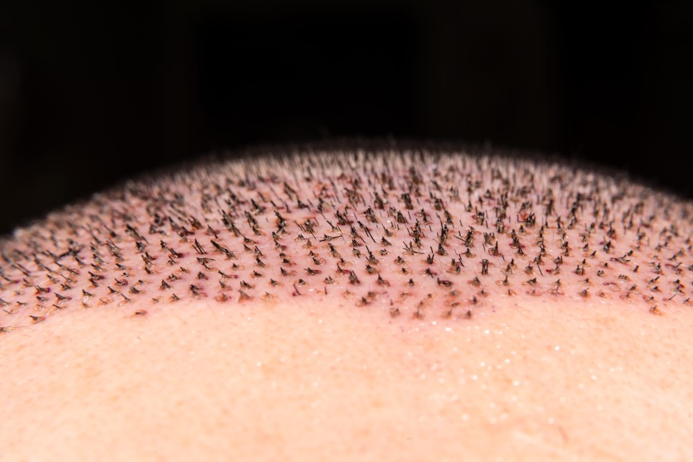
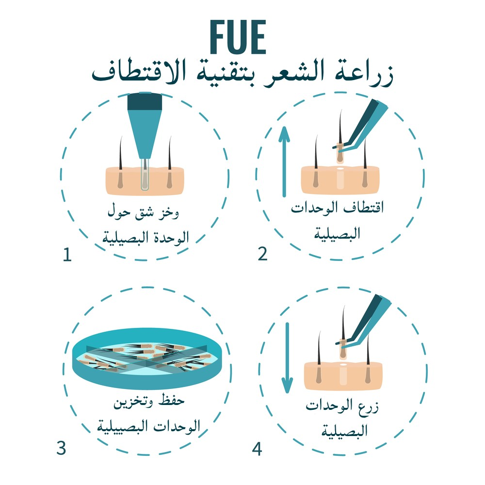
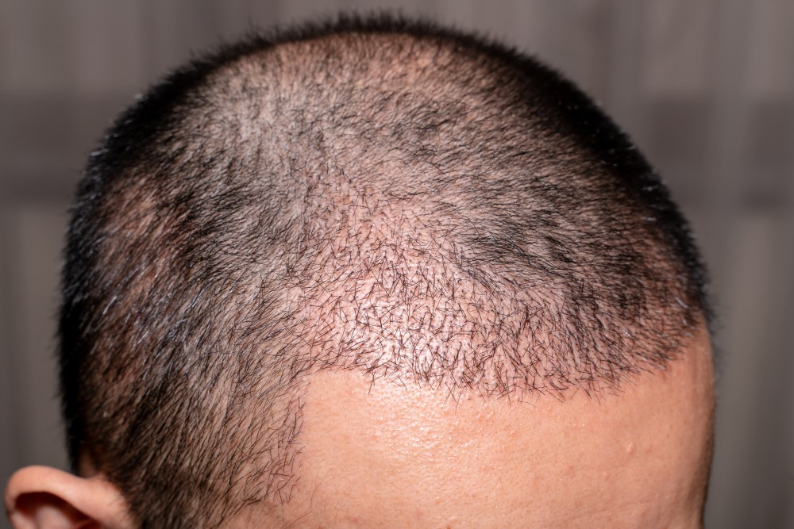

زراعة الشعر
تعتبر زراعة الشعر إجراءً تجميلياً شاع استخدامه في السنوات الأخيرة بتقنيات متطورة ودون شعور بالألم، ويتم ذلك عبر الاستعانة بمناطق أخرى مانحة من الجسم

مميزات زراعة الشعر بتقنية الاقتطاف FUE وتكاليفها في تركيا
جدول المحتويات
ما هي زراعة الشعر بتقنية الاقتطاف FUE؟
اقتطاف وحدة بصيلية - المعروف بـ FUE - هو نوع من أنواع زراعة الشعر، يتم عن طريق أخذ بصيلات شعر فردية من المنطقة المانحة ونقلها إلى جزء آخر من جسمك؛ حيث يكون الشعر أخف، أو غائبًا، ويُسمَّى هذا الجزء بالمنطقة المستقبِلة.
يستخدم الجراحون وخزات دقيقة لاستخراج البصيلات الفردية ونقلها، دون ترك أي علامات اقتطاف.
مميزات زراعة الشعر بتقنية الاقتطاف FUE
- أقل توغلاً
إنها أقل توغلاً بكثير من تقنية FUT المستخدمة سابقًا، وهذا يضمن عدم ظهور أي ندوب في المنطقة المانحة.
- لا يسبب أي ندبات
إن الاقتطاف لا يترك أيَّ ندباتٍ أثناءَ اقتطافِ بصيلاتِ الشعر من المنطقة المانحة، كما أن هذه التقنية لا تُستخدم في زراعةِ شعرِ الرأس فقط، بل تشمل زراعة الحاجب والشارب واللحية بشكل فعال.
- أكثر ملاءمة
إنها طريقة طُوِّرتْ للذين لا تناسبهم الطرق التقليدية.
- يمكن زرع عدد كبير من البصيلات
تسمح تقنية FUE بزراعة العديد من البصيلات في جلسة واحدة. إذ يمكن في المتوسط زراعة نحو خمسة آلاف بصيلة.

عيوب زراعة الشعر بالاقتطاف
العيب الرئيسي لـ FUE هو أن عدد البصيلات التي يمكنك اقتطافها محدود بحجم المنطقة المانحة وكثافتها، ونتيجة لذلك فإنها غالبًا ما تنتج عددًا أقل من البصيلات من FUT.
تعد البصيلات أيضًا أكثر عرضة للتلف مقارنةً ببصيلات تقنية FUT وتتوافق جودة الاقتطاف مع مهارة وخبرة الجراح.
مراحل زراعة الشعر بتقنية الاقتطاف FUE
- المرحلة الأولى : الاستشارة والتحضير
في بداية إجراء زراعة الشعر، يجلس المرضى للاستشارة الفردية مع الدكتور المختص.
من المهم إجراء تقييم فردي لكل حالة، وتحديد العدد الأمثل للبصيلات المراد زراعتها، إضافة إلى موضعها.
- المرحلة الثانية : اقتطاف البصيلات من المنطقة المانحة
وخلال هذه الخطوة، يستخدم الجراح أداة متخصصة لاستخراج الطعوم من المنطقة المانحة للمريض، إذ تُستخرج الطعوم المانحة تقليديًا من مؤخرة فروة الرأس وجوانبه.
- المرحلة الثالثة : تحضير البصيلات
أثناء اقتطاف البصيلات وبعده، يتخذ فريقنا تدابير فعالة للحفاظ على البصيلات من أجل تجهيزها للزراعة.
- المرحلة الرابعة : الزراعة
بمجرد اقتطاف كمية كافية من البصيلات، يبدأ الجراح المختص في زرعها، ويقوم الفريق المرافق بتحميل البصيلات الفردية في أقلام الزراعة، واحدًا تلو الآخر، ويمررها إلى الجراح.
- المرحلة الخامسة : الرعاية بعد العملية
من المهم بعد اكتمال المراحل الرئيسية لعملية زراعة الشعر، اتباعُ إجراءات الرعاية اللاحقة بشكل صحيح.
ويشمل ذلك غسل المناطق المانحة والمستقبلة، وحماية البصيلات المزروعة، وتجنب الفرك المفرط والتأثيرات وأشعة الشمس المباشرة، كما أننا في علاجك الطبية سنحدد - بالاتفاق مع الجراح - يوماً للمتابعة الطبية؛ للتحقق من التعافي، وذلك بعد يوم واحد من عملية الزراعة.

تكلفة زراعة الشعر بتقنية الاقتطاف FUE في تركيا
تُعَدُّ تركيا من أقل دول العالم تكلفة في عمليات زراعة الشعر، ولا سيما إذا ما قورنت بدول الاتحاد الأوروبي، وتختلف تكاليف زراعة الشعر في تركيا وفقاً لعوامل عديدة، منها التقنيات التي يستخدمها الأطباء أثناء الزراعة، وعموماً فإن تكلفة زراعة الشعر في تركيا تتراوح بين 1200 إلى 1500 دولار أمريكي.
نصائح ما بعد زراعة الشعر بتقنية FUE
يجب غسل الشعر بالشامبو يوميًا لإزالة القشور.
وبعد نحو 7-10 أيام، لن يكون هناك أي آثار للدم الجاف أو القشور على فروة رأسك.
يمكنك البدء بغسل شعرك بالطريقة العادية في موعد لا يتجاوز أربعة عشر يومًا بعد الزرع، وإذا لزم الأمر، يمكن غسل الشعر أكثر من مرة في اليوم بعد العملية.
نتائج زراعة الشعر بالصور بتقنية FUE
قبل وبعد زراعة الشعر 2021 التقنية سفير عدد البصيلات 6000 النتيجة بعد سنة ونصف التقنية سفير بيركوتان عدد البصيلات 5500 النتيجة بعد سنة التقنية سفير بيركوتان عدد البصيلات 5500 النتيجة بعد السنة والنص التقنية سفير عدد البصيلات 4500 النتيجة بعد سنة التقنية سفير عدد البصيلات 4500 النتيجة بعد سنة ونصف قبل
قبل
 بعد
بعد
 قبل
قبل
 بعد
بعد
 قبل
قبل
 بعد
بعد
 قبل
قبل
 بعد
بعد
 قبل
قبل
 بعد
بعد
الفرق بين تقنية DHI وتقنية الاقتطاف FUE
يتمثل الاختلاف الرئيسي بين تقنية FUE و DHI في طريقة زراعة البصيلات في المنطقة المستقبلة.
أثناء عملية FUE، يقوم الجراح بزرع البصيلات المستخرجة يدويًا.
أما في تقنية DHI، يتم استخدام أداة زرع محددة تُعرف أيضًا باسم Choi Implanter Pen))
علاوة على ذلك ، يتطلب FUE فتح القناة قبل زراعة الشعر.
ويمكن تلخيص أهم الفروق بين التقنيات في الجدول أدناه:
|
FUE |
DHI |
|
فترة تعافٍ أطول |
تتميز طريقة DHI بفترة تعافٍ أسرع وأقصر |
|
ينتج عن إجرائها نزيف أكثر |
ينتج عن إجرائها نزيف أقل |
|
تنتج كثافة أقل |
إمكانية توفير كثافة أفضل |
|
مثالية لتغطية مساحات كبيرة |
تغطية مساحات صغيرة |

ما الفرق بين تقنية السفير وتقنية FUE؟
الفرق الأساسي بين تقنية سفير (FUE) والتقليدي (FUE) هو استخدام شفرات مصنوعة من السفير (الياقوت) بدلاً من الشفرات المصنوعة من المعدن.
إضافة إلى فتح قنوات أصغر مقارنة بقنوات الشفرات المعدنية، كما ساعدت شفرات الياقوت أيضًا في تقصير مدة الشفاء للمريض.
إقرا اكثر :تقنية السفير لزراعة الشعر في تركيا: تكاليفها ومميزاتها
سؤال وجواب - زراعة الشعر
على عكس عمليات زرع الأعضاء، أنت المتبرع لنفسك في عملية زرع الشعر، إذا تلقيت شعرًا وبصيلات وأنسجة من شخص آخر، فإن جسمك سيرفضها بدون أدوية مثبطة للمناعة.
العلاج بالليزر منخفض المستوى - يُشار إليه أيضًا باسم العلاج بالضوء الأحمر وعلاج الليزر البارد - يشع الفوتونات في أنسجة فروة الرأس. تمتص الخلايا الضعيفة هذه الفوتونات لتشجيع نمو الشعر، معروف على نطاق واسع أن هذا الإجراء آمن ومقبول وأقل توغلاً من جراحة زرع الشعر.
تعتبر عملية زرع الشعر للنساء من العمليات باهظة الثمن في أوروبا وأمريكا والعالم، ولكنها تتم بأسعار معقولة للغاية في تركيا، حيث تتراوح تكلفة زراعة الشعر بين 800 إلى 1000 يورو.
كل ما عليك فعله هو قضاء 3 أيام في إسطنبول لزراعة الشعر، مع علاجك الطبية سوف تقيم في إسطنبول لمدة ليلتين و3 أيام، وستغادر إلى بلدك مع شعرك الجديد، يمكنك العودة إلى العمل بعد 3 أيام إذا لم يتضمن عملك أي نشاط بدني.
تواكب علاجك الطبية أحدث طرق زراعة الشعر والتي تشمل: • تقنية زراعة الشعر بالوحدة البصيلية المعروفة باسم FUT • تقنية زراعة الشعر باستخراج او اقتطاف الوحدة البصيلية المعروفة باسمFUE • تقنية الاستخراج او الاقتطاف الدقيق Nano FUE • تقنية "سفير" لزراعة الشعر • زراعة الشعر المباشرة بأقلام تشوي • زراعة الشعر بالروبوت • زراعة الشعر بالخلايا الجذعية
تتوفر في تركيا أحدث تقنيات زراعة الشعر بما في ذلك تقنية زراعة الشعر بدون حلاقة.
تتشابه زراعة الشعر في تركيا وإيران نوعاً ما، ولكنها تتميز في تركيا من حيث التقنيات المستخدمة وسهولة التنقل وتعدد أساليب الدفع.
لا تتميز علاجك الطبية بخبرة طاقمها الطبي والفني فحسب بل بعروضها المميزة ومنها عروض زراعة الشعر المتجددة باستمرار تواصلو معنا لمعرفة آخر العروض.
عادة ما تكون مخاطر زراعة الشعر وآثاره الجانبية طفيفة وتزول في غضون بضعة أسابيع وتشمل: • نزيف • التهابات • تورم فروة الرأس • قشرة تتشكل على مناطق فروة الرأس حيث تم إزالة الشعر أو زراعته • خدر أو نقص الإحساس في المناطق المعالجة في فروة الرأس • حكة
يوجد الكثير من الشركات الجيدة التي تقدم خدمات مميزة في مجال زراعة الشعر في تركيا، وتعتبر علاجك الطبية في إسطنبول إحدى الوجهات المفضلة لدى الكثيرين لما تتميز به خدماتها من جودة العالية وأسعار المعقولة وخبرة طويلة.
على الرغم من أنه يمكن إجراء عمليات زراعة الشعر لأي شخص فوق سن 18 عامًا ، فمن المستحسن عدم إجراء عملية زراعة الشعر حتى سن 25+. قد لا يكون الرجال الأصغر سنًا هم أفضل المرشحين لأن نمط تساقط الشعر لديهم قد لا يتم تحديده بالكامل بعد
تحرير: علاجك الطبية©
اطلع على أحدث المنشورات والأخبار الطبية
عمليات شفط الدهون بالفيزر في تركيا والأسعار 2021
يعتبر شفط الدهون بالفيزر من أفضل عمليات علاج السمنة المفرطة. تعرف معنا على مميزات وعيوب شفط الدهون بالفيزر وكيف تتم العملية وشاهد الفرق قبل وبعد في تركيا.
طرق علاج طول النظر في تركيا وأحدث التقنيات
يعاني الكثير من كبار السن وحتى البالغين من مرض طول النظر . سنتحدث في هذا المقال عن كيفية علاج طول النظر وأسباب هذا المرض ونسبة نجاح العلاج .
الفرق بين زراعة الشعر في ايران وتركيا 2021
بالرغم من أن أسعار زراعة الشعر بين تركيا وايران لا تختلف كثيرا إلا أن هنالك الكثير من الفروق التي قد تحدد لك الدولة الأفضل لزراعة الشعر فيها.
طرق علاج قصر النظر في تركيا وأحدث التقنيات
يعاني الكثير من الأطفال وحتى البالغين من مرض قصر النظر. سنتعرف في هذا المقال على أفضل طرق علاج قصر النظر وأسباب هذا المرض ونسبة نجاح العلاج .